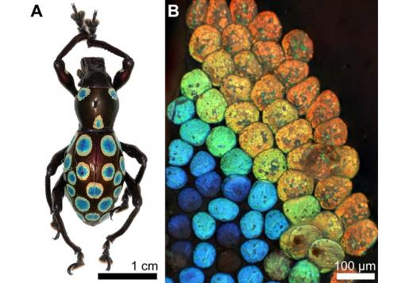

The Gosnell code of silence persists...
Pro-Life Dems Extinct as Party Marches Left...
Unemployment Hits Lowest Level Since 1969
Pompeo Heads Back to NKorea with Historic Deal in Play...
Bernie now calls on McDonald's to raise minimum wage to $15/hr...
After Kaepernick ad, Nike store traffic was up in blue -- and red -- counties
Netflix is developing adaptations of The Chronicles of Narnia
'Grievance studies': Culture of corruption at universities exposed with hoax papers...

A beautiful design humans can’t replicate...
Manchester United could install gender-neutral bathrooms at Old Trafford
Five-Year-Old Allegedly Sexually Assaulted In School Bathroom Because Of Secret Trans Policy
Trans inmate had 2nd operation to 'become man again' after 10 years in female jail
UK Primary School Has 6-Year-Olds Write Love Letter From Prince to Male Servant to Teach ‘Diversity’
Yes, we're really having to talk about sex robots...
House Democrat Promises Kavanaugh Investigation if Party Wins Control
Shapiro: 'Never seen conservatives of all stripes so united' [language]
Erickson no longer 'Never Trump'...
Palin to Murkowski after 'no' vote: 'I can see 2022 from my house'
Friend of Blasey Ford told FBI she was pressured into altering statement...
Trump Says George Soros Backs 'Paid Professional' Protesters
Georgetown prof no longer teaching after profane tweet about Kavanaugh supporters
Smart offices that blast you with cold air if you’re sleepy are coming...

Your kids hate your smartphone addiction...
Facebook Employees Protest Exec’s Friendship with Kavanaugh
Chided by Zuck, Sandberg at 'intense' meeting; staffers 'incredulous'
Study: 91 Percent of Apple Contributions Went to Dems...
White House calls on Google to abandon controversial Chinese search engine project
Wikipedia Bans Use of Breitbart Links in Articles
Facebook doubles amount of time required to delete account -- now takes a full month
Ireland passes 'groundbreaking' bill to curb excessive drinking